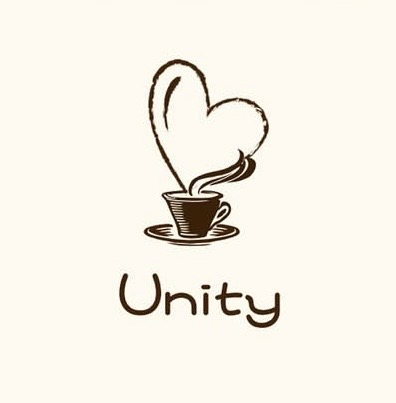

UNITY TOKYO一生ものの仲間と出会い、共に成長していく。品川発のカフェ交流コミュニティ
初対面の緊張も、名刺交換のような形式ばった空気も、Unityにはありません。あるのは、グルメやカフェでのゆったりした時間と、少し柔らかくなった会話だけ。
Unityは、20代・30代の"今をがんばる人たち"のためのカフェ交流コミュニティです。大人数の飲み会でも、堅苦しいセミナーでもなく、少人数制のカフェ交流会という形で、自然なつながりが生まれる時間をつくっています。
その日限りの出会いで終わらせない。一緒に時間を重ね、一生ものの仲間として、共に成長していく。それが、Unityが目指す関係のかたちです。
出会い×成長=楽しい
出会った人が、一生ものの仲間になる。そして、その仲間と一緒に成長していく。Unityが大切にしているのは、そんな関係が自然に生まれる時間です。
Instagram（@unity_up9）またはお申し込みフォームから気になる回にエントリー。
少人数制のカフェ交流会で、肩肘張らずに自然な会話を楽しむ時間。
その場限りで終わらない。コミュニティを通じて、関係が続いていく。
おしゃれなカフェで開催。落ち着いた雰囲気の中でじっくり話せる会。
開放感のあるカフェホールで、初参加の方も多く新しい出会いが生まれます。
詳細はInstagram（@unity_up9）にて先行案内予定。お楽しみに。
趣味：カフェ巡り、グルメ開拓、フットサル、アニメ
美味しいもの巡るのが大好きで年間300店舗以上開拓しています！
お互い成長できる関係値が理想です✨
趣味：カフェ巡り、ランニング
Unityのみんなと一緒に、全員が楽しめる場をつくります。みんなで楽しみましょ♪
趣味：生け花、フットサル、音楽
ノリを大事に✨参加者一人ひとりが心地よく過ごせる場づくりを大切にします。
趣味：美容、読書、カフェ巡り
向上心のある人や主体性のある人が集まり繋がれる、そんなコミュニティを目指します。
趣味：ゴルフ、スノボ、ベーグル作り
素敵な休日と感じる、それを実際に体験できる場所づくりを目指します。
初めてでも緊張せずに話せる雰囲気で、気づいたら自然と会話が弾んでいました。
少人数だからこそ深い話ができて、参加後もつながりが続いています。
カフェという空間が心地よく、無理のないペースで交流できました。
運営の方が丁寧にサポートしてくれるので、一人参加でも安心でした。
同世代の色々な価値観に触れられて、良い刺激をもらっています。
品川エリアを中心に定期開催
少人数制で会話が生まれやすい規模感
平日夜・休日を中心に開催
初参加・お一人での参加も歓迎
はい、参加者の半数以上が一人参加です。運営が間に入って会話をサポートするので、初めての方でも安心してご参加いただけます。
回によって異なります。詳細は各回の募集案内（Instagram：@unity_up9）に記載しています。
20代〜30代を中心に、男女比はおおよそ半々を目安に調整しています。
品川エリアのカフェを中心に、回ごとに会場が変わります。詳細は参加確定後にご案内します。
やむを得ない事情の場合はご相談ください。Instagramのメッセージよりご連絡をお願いします。
参加者募集の最新情報は公式Instagramで随時更新中。まずはフォローして、気になる回をチェックしてみてください。